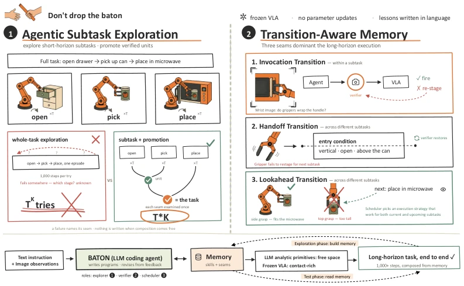
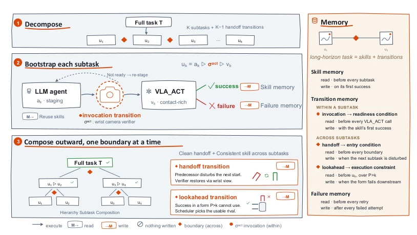
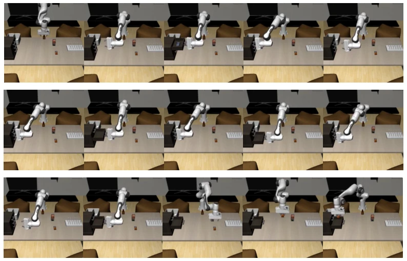

The name BATON is apt, given that dropping the baton (Drop the Baton) is common in long-horizon tasks. The core viewpoint of this paper is sharp: current VLA models are like sprint champions who only excel at individual combat; they collapse during relays, not because they can't run, but because the baton handoff (Transition) is not done well. Instead of training more complex end-to-end models like others, the authors go against the grain, using an LLM as a coach to break long tasks into sprints and explicitly model the 'baton handoff' process. This 'divide and conquer' strategy indeed solves the pain point of exponentially exploding exploration costs, reducing multiplication costs to addition. However, this method relying on LLM trial-and-error during testing (Test-time exploration) might be a bit 'tedious' in scenarios with high real-time requirements, after all, making robots repeatedly redo experiments like students to remember how to open a door is not necessarily the most efficient solution. But then again, being able to increase success rates from 26.9% to 57.7% in long-horizon tasks, this 'sharp-tongued' improvement is indeed fierce, at least proving that 'baton handoff' is more important than 'running fast'.
The core pain point of long-horizon manipulation is not that individual skills (such as grasping, opening doors) are not strong enough, but the fragility of the skill chain. Existing Vision-Language-Action (VLA) models such as π0.5 [12] and π0 [2], although performing excellently in single skills, suffer from compounding errors in multi-stage tasks, and the end state of a previous subtask often cannot serve as an effective start state for the next subtask. Literature [18] points out that SOTA models have acceptable completion rates in intermediate stages of thousand-step tasks, but the full task completion rate is extremely low (only about 10%). Existing methods based on Coding Agents (such as Harness VLA [40]) attempt to solve this through LLM planning, but face two fatal flaws in long-horizon tasks: first, exploration costs explode exponentially (T^K), because all stages must succeed at once to record experience; second, there is a lack of explicit modeling of 'Transitions' (Transition), leading to state residues (residue) and policy conflicts between subtasks that cannot be identified and repaired. For example, [39] and [9] both mention that state shifts at subtask boundaries are the main cause of failure, but existing methods cannot distinguish whether it is the skill itself that is inadequate or the start state is incorrect. BATON was born precisely to solve these 'baton handoff' problems.

Figure 1: BATON makes every transition of a long-horizon task a first-class object. Bottom: an LLM coding agent writes programs over analytic primitives, calls the frozen VLA only for contact, and stores every lesson in language memory; no parameters are updated. ❶Agentic subtask exploration (left): whole-task exploration pays T K episodes and cannot say which stage broke; BATON explores each subtask short-horizon and promotes verified units round by round, so cost stays additive and a failure names its stage. ❷Transition-aware memory (right): three transitions, one store. The invocation transition fires the VLA only after the wrist view confirms the scene is ready; the handoff transition repairs the entry state a predecessor’s residue disturbs; the lookahead transition lets the next subta
BATON proposes a framework based on LLM coding agents, the core of which is treating 'Subtasks' (Subtask) as exploration units and 'Transitions' (Transition) as memory units. The overall process is divided into two phases: exploration and execution, with no parameter updates. First, the LLM decomposes long instructions into a sequence of K subtasks. In the exploration phase, the system no longer attempts the full task, but performs short-horizon exploration (Agentic Subtask Exploration) for each subtask, reducing costs from multiplicative to additive (T·K). Successful experiences of each subtask are extracted and stored, while explicitly recording three key transitions: 1. Invocation Transition (Invocation Transition): Before VLA executes contact operations, the Verifier (Verifier) via Wrist Camera (Wrist Camera) confirms the scene is ready (e.g., gripper position is correct), avoiding VLA starting in out-of-distribution states. 2. Handoff Transition (Handoff Transition): Records entry conditions between subtasks; if residues left by previous tasks (e.g., gripper rotation) affect subsequent tasks, the Verifier actively corrects the state using Analytic Primitives (Analytic Primitives). 3. Lookahead Transition (Lookahead Transition): The Scheduler (Scheduler) constrains the execution strategy of the current task (e.g., grasping method) based on the needs of subsequent tasks, ensuring current success does not lead to subsequent failure. In the memory module, these transition conditions are converted into natural language contracts (Handoff Contract), stored on the edges (Edges) of the skill library rather than nodes (Nodes), allowing the same transition experience to be reused by different tasks. In the execution phase, the system directly reads skills and transition conditions from memory, combines them in order, without needing re-exploration.

Figure 2: BATON overview. Left: The agent drafts a long-horizon instruction into K subtasks joined by K−1 handoff boundaries (Eq. (2)). Each subtask is explored through bootstrapping and then composed hierarchically into the full task. Within a subtask, the agent explores candidate skills and triggers an invocation transition, in which a wrist-camera verifier confirms that the scene is ready before VLA ACT is called to perform contact-rich behavior. Across subtasks, a handoff transition ensures that the terminal state of one subtask does not disturb the initial state of the next, while a lookahead transition propagates the execution strategy of the current subtask to correlated successors. Right: Memory comprises three components. All three are involved during exploration, whereas only the
Experiments are conducted on the RoboMemArena benchmark, which includes 26 thousand-step household tasks, covering four categories: Transfer, Occlusion, Counting, and Sequence. Baselines include π0.5 [12], HiF-VLA [13], MemER [32], PrediMem [18], and unoptimized Harness VLA [40]. Evaluation metrics are Task Success Rate (TSR) (TSR) and Cumulative Success Rate (CSR) (CSR). Results show BATON achieves 57.7% in TSR and 78.8% in CSR, exceeding the strongest baseline FrameSamp+Modul [6] by 11.6 and 14.9 percentage points respectively, even surpassing the Oracle model (Oracle) with perfect memory information. Especially in the 'Occlusion' and 'Counting' categories, BATON performs significantly better than other methods, proving its effective handling of state residues and sequence dependencies. In contrast, unoptimized Harness VLA scores 0 on occlusion tasks, indicating full-task exploration completely fails in complex scenarios. Ablation analysis (implicit in comparison) (Ablation analysis (implicit in comparison)) indicates that explicit modeling of transitions is key to improving long-horizon task success rates, and simply increasing memory capacity (such as MemER) cannot solve the problem of boundary state mismatch.

Figure 3: Demo of a successful long-horizon RoboMemArena task execution during testing. This task runs over 1800 steps, roughly 13 times the length of a typical LIBERO task. It requires opening and closing three drawers in order, then reopening the empty drawer and placing the butter into it. During the exploration phase, only subtasks and their transitions are explored; the full task is composed from memory and succeeds on the held-out seed.